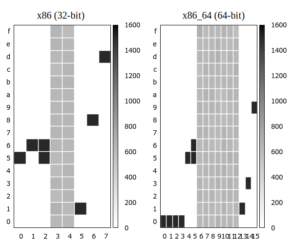

Taesoo Kim
Taesoo Kim

0x080488be <main+219> : call 0x8048540 <puts@plt>
↓
► 0x8048540 <puts@plt> : jmp dword ptr [_GOT_+40] ---+
0x8048546 <puts@plt+6> : push 0x38 <---+ (1)
0x804854b <puts@plt+11>: jmp 0x80484c0
↓
0x80484c0 : push dword ptr [_GOT_+4]
0x80484c6 : jmp dword ptr [0x804a008] <0xf7fe9240>
↓
0xf7fe9240 <_dl_runtime_resolve> : push eax
0xf7fe9241 <_dl_runtime_resolve+1>: push ecx
0xf7fe9242 <_dl_runtime_resolve+2>: push edxint dev_set_name(struct device *dev, const char *fmt, ...) {
va_list vargs;
int err;
va_start(vargs, fmt);
err = kobject_set_name_vargs(&dev->kobj, fmt, vargs);
va_end(vargs);
return err;
}
// @register_disk()
dev_set_name(ddev, disk->disk_name);
// @__nbd_ioctl()
kthread_create(nbd_thread, nbd, nbd->disk->disk_name);void sudo_debug(int level, const char *fmt, ...) {
va_list ap;
char *fmt2;
if (level > debug_level) return;
/* Backet fmt with program name and a newline
to make it a single write */
easprintf(&fmt2, "%s: %s\n", getprogname(), fmt);
va_start(ap, fmt);
vfprintf(stderr, fmt2, ap);
va_end(ap);
efree(fmt2);
}// glibc/debug/printf_chk.c
int ___printf_chk (int flag, const char *format, ...) {
va_list ap; int done;
* if (flag > 0)
* stdout->_flags2 |= _IO_FLAGS2_FORTIFY;
va_start (ap, format);
done = vfprintf (stdout, format, ap);
va_end (ap);
* if (flag > 0)
* stdout->_flags2 &= ~_IO_FLAGS2_FORTIFY;
return done;
}// @vprintf()
LABEL (form_number):
if (s->_flags2 & _IO_FLAGS2_FORTIFY) {
if (! readonly_format) {
extern int __readonly_area (const void *, size_t);
readonly_format \
= __readonly_area (format, ((STR_LEN (format) + 1)
* sizeof (CHAR_T)));
}
if (readonly_format < 0)
__libc_fatal ("*** %n in writable segment detected ***\n");
}// @lec02-fmtstr/format
$ cc -g -Wformat test.c -o test
> format ‘%d’ expects a matching ‘int’ argument
dev_set_name(3, "test3: %d %d\n", 1); /* YES */
~^
> too many arguments for format
dev_set_name(3, "test4: %d %d\n", 1, 2, 3); /* YES */
^~~~~~~~~~~~~~~~
> missing $ operand number in format
dev_set_name(3, "test4: %2$d %d %d\n", 1, 2); /* FALSE */
^~~~~~~~~~~~~~~~~~~~~
> $ operand number used after format without operand number
dev_set_name(3, "test4: %d %1$d", 1); /* FALSE */
^~~~~~~~~~~~